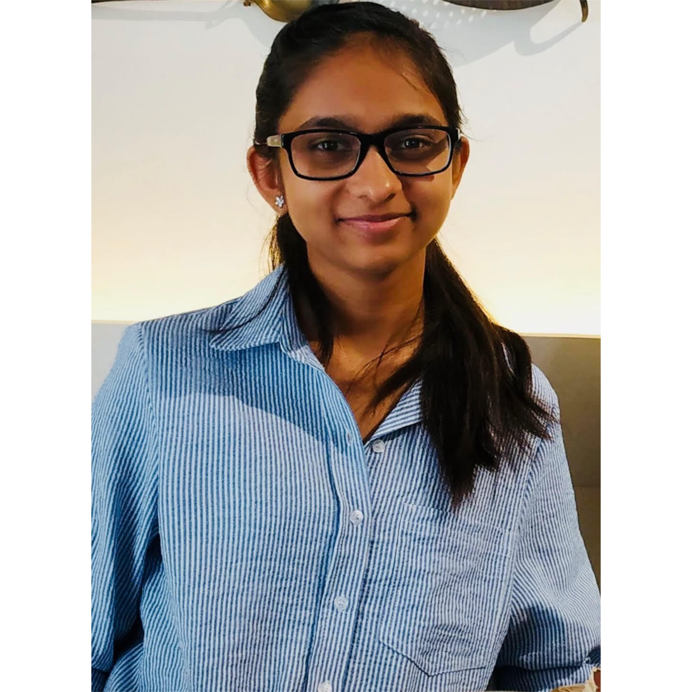

Charvi Bannur
Hi There !!! I'm a undergraduate computer science student at PES University, Bangalore, India. My primary research focus is applied machine learning and I also have a deep interest in graph theory and social network analysis. You can find my publications here. In the past I have interned at the IBAB, IIIT-Hyderabad, IIT Mandi and IEEE CS Chapter. you can find my resume here.
My senior year thesis is based on detecting Autism Spectrum Disorder using a novel VQA Algorithm in collaboration with BMCRI x ASHA foundation. The very hands-on nature of this project cemented my interest in research. It has been an impactful experience, from interacting with psychiatrists to autistic children and parents, attending conferences to understand the importance of inclusion and networking with the community and working on the project itself.
I love attending conferences as they are the perfect place to catch up on technology, have interesting conversations during coffee breaks and network with people from around the world who have a wealth of knowledge. I document by experiences and projects on my blog page that you could check out if you're interested. In my free time you'll likely catch me with a paintbrush or sketchbook in hand. To me design is "creative problem solving" and when engineering meets design, voila, magic happens ✨